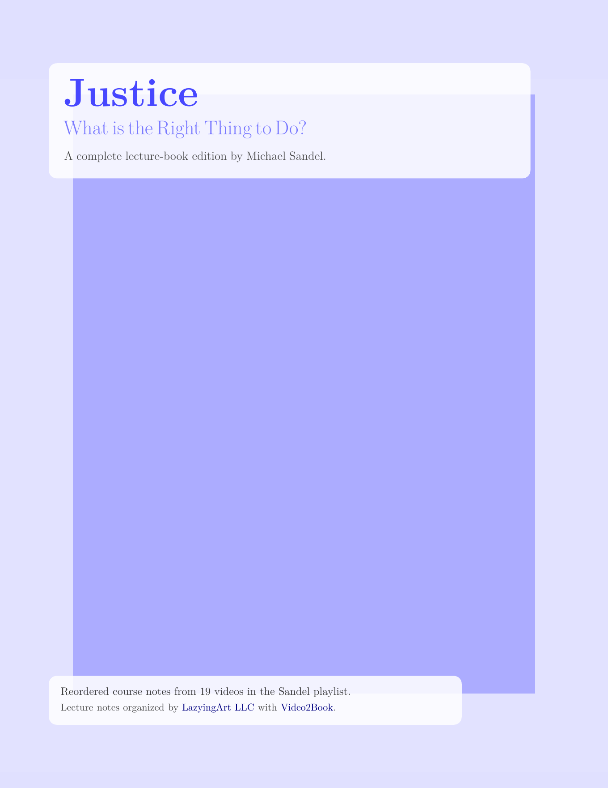

Pace
Weekly focus on one primitive—scattering, variational tricks, or Gaussian automation.
Knowledge + skill, unrushed. Slow notebooks, reproducible scripts, and honest progress logs — all routed through learn.lazying.art.
Featured Book
A reordered public book edition built from finished writing and speaking lecture notes, published in English, Traditional Chinese, and Japanese.

Featured Book
A complete 19-lecture course book edition from the Sandel playlist, fully transcribed and structured in lecture-note format.
Direct links to the Leonard Susskind lecture-note book collection.
 Advanced Quantum Mechanics Supplementary course book
Advanced Quantum Mechanics Supplementary course book
 Particle Physics 1 Basic Concepts
Particle Physics 1 Basic Concepts
 Particle Physics 2 Standard Model
Particle Physics 2 Standard Model
 Particle Physics 3 Supersymmetry and Grand Unification
Particle Physics 3 Supersymmetry and Grand Unification
 Quantum Entanglement Part 1
Quantum Entanglement Part 1
 Quantum Entanglement Part 3
Quantum Entanglement Part 3
 Topics in String Theory Cosmology and Black Holes
Topics in String Theory Cosmology and Black Holes
 String Theory and M-Theory Supplementary course book
String Theory and M-Theory Supplementary course book
 Demystifying the Higgs Boson Single-lecture book
Demystifying the Higgs Boson Single-lecture book
Weekly focus on one primitive—scattering, variational tricks, or Gaussian automation.
Every plot ships with matching notebooks inside comp_physics/ and scripts
inside examples/.
GitHub Pages serves docs/ directly so anyone can peek at the backlog or
clone the calculations on demand.
Quick links into the workbench.
Numerical experiments, from Numerov solvers to Lennard-Jones sweeps, live in the
comp_physics/ tree.
Minimal QAOA and VQE pilots under examples/ keep the tooling sharp
without heavyweight dependencies.
The multiwfn/ drop mirrors the upstream 3.8 dev kit for quick
wavefunction analysis alongside Gaussian outputs.
Static PNGs in figures/ capture convergence plots, QAOA heatmaps, and
anything worth reusing in talks.
Tuned comp_physics/numerov.py plus its notebook to sweep boundary
conditions; refreshed figures/ in the process.
examples/pennylane_chemistry_h2_vqe.py now logs intermediate energies so
the LazyLearn site can embed convergence GIFs.
The reading queue condenses advanced texts into quick public briefings tucked inside the notebooks.
Clone the repo, run a script, tweak a notebook, then log the win so LazyLearn can
celebrate. Custom domain setup: learn.lazying.art → GitHub Pages (docs/).
Explore related hubs across the LazyingArt network.
The studio behind OnlyIdeas, EchoMind, and LazyEdit.
lazying.art →Research‑to‑product community.
onlyideas.art →Multilingual AI companion for learning and creation.
chat.lazying.art →Focus on ideas while PaperAgent handles the paper workflow.
paper.lazying.art →Rewards and payouts bridging contributions and on‑chain value.
coin.lazying.art →Automations to turn small wins into income.
earn.lazying.art →Physics and chemistry learning tracks.
learn.lazying.art →Agent that turns ideas into drafts, tasks, and posts.
robot.lazying.art →Capture, translate, and auto‑produce highlight reels.
glass.lazying.art →Research notes and essays.
ideas.onlyideas.art →